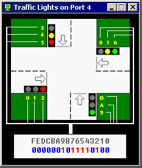

控制外部设备
模拟器提供了3个设备：交通灯,步进电动机 和机器人
你可以从模拟器的“Virtual Devices”菜单中启动它们。
技术信息请参考Emu8086参考中的 I/O ports 一章。
一般来说，通过x86家族的CPU可以控制各种设备，这些设备是通过不同
I/O端口区分开的，这可以通过一些电子设备达到目的。通常，'.bin'
文件是用来写入只读存储器（ROM）的，系统从只读存储器中读取，然后
写入ram并执行。这个原理在许多现代设备中都采用，比如：微波炉等等
交通灯

通常使用一个数组（表）控制交通灯。在特定时间，从数组中读取数值
发送到端口。例如：
; directive to create BIN file:
#MAKE_BIN#
#CS=500#
#DS=500#
#SS=500#
#SP=FFFF#
#IP=0#
; skip the data table:
JMP start
table DW 100001100001b
DW 110011110011b
DW 001100001100b
DW 011110011110b
start:
MOV SI, 0
; set loop counter to number
; of elements in table:
MOV CX, 4
next_value:
; get value from table:
MOV AX, table[SI]
; set value to I/O port
; of traffic lights:
OUT 4, AX
; next word:
ADD SI, 2
CALL PAUSE
LOOP next_value
; start from over from
; the first value
JMP start
; ==========================
PAUSE PROC
; store registers:
PUSH CX
PUSH DX
PUSH AX
; set interval (1 million
; microseconds - 1 second):
MOV CX, 0Fh
MOV DX, 4240h
MOV AH, 86h
INT 15h
; restore registers:
POP AX
POP DX
POP CX
RET
PAUSE ENDP
; ==========================
|
步进电动机

发动机靠单向的磁力运作，旋转一对磁铁，发动机能够半速运作。
再旋转另一对磁铁，发动机能够全速运作。
所以，最好的方法是两个半速的叠加以达成全速的运转。
半速相当于11.25度
全速相当于22.5度=半速的2倍
发动机能够顺时旋转，也可逆时旋转。
参考stepper_motor.asm。
或参考EMU8086 I/O ports 章节。
机器人

控制机器人的指令在 Emu8086参考的 I/O ports章节
为了得到最高的效率，应该使用复杂的算法。最简单，
也是最没有效率的算法就是随机移动算法，具体代码
请查阅 文件夹中的robot.asm使用数据表（像前面
交通灯一样）也可以，特别是当机器人始终处于同样的
环境的时侯。